Bringing GraphQL to the Enterprise:
When IBM Met Apollo
About me:
- Born and raised in Fort Collins, Colorado
- Colorado State University (2013)
- Sold Insurance (2013 - 2016)
- Galvanize (2016)
- IBM (2017)
About Jason:
- Senior developer / front-end architect at IBM
- Former workaholic / current work-life balance advocate
- Obsessed with processes & efficiency
- World's oldest young man
GraphQL is awesome.
Why?
Because Front-End Development
Is Hard
Why is front-end development hard?
- More and more app logic is living in the front-end
- The front-end is creeping further into the back-end
- Our apps have to be fast...
- ...even on slow and unstable connections
It’s harder across teams:
- FEDs are dependent on back-end teams
- APIs have to exist before UI work can start
- If docs are missing or out of date...
- ...our “docs” are asking Steve on Slack
Back-end teams burn tons of hours supporting FEDs
Front-end teams burn tons of hours getting started
And if a server goes down...

...we wait.

It can be rough on our users, too.
"53% of visits are abandoned if a mobile site takes more than three seconds to load"
- DoubleClick
We can do better
What if we could...
- find all our data in a single place?
- test data queries in the browser?
- create custom queries with only data we need?
- work in parallel with back-end teams?
- develop even if the server is down?
- show explorable UIs before data is loaded?
- render data as it loads instead of all at once?
(Pause for dramatic effect.)
🎉 We can! 🎉
...and GraphQL + React make it easy
Interactive Online Documentation
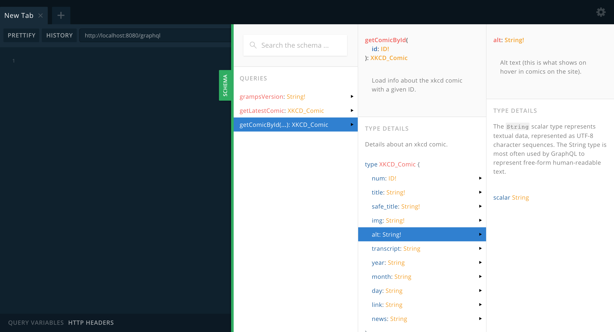Guaranteed to be up-to-date!
Test Queries in the Browser
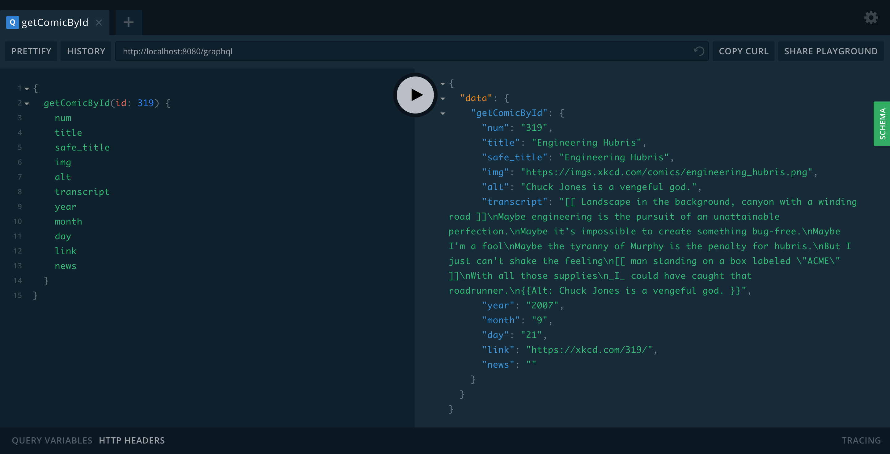This is copy-pasteable into your app.
Load Only Data We Need
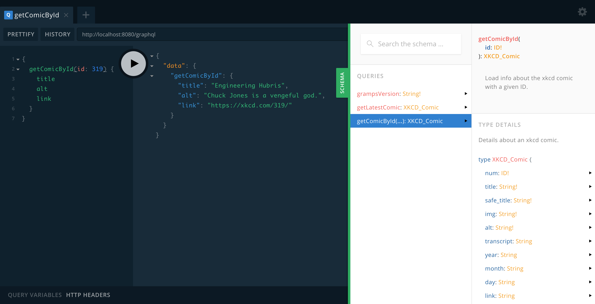No wasted data transfer.
Work Offline
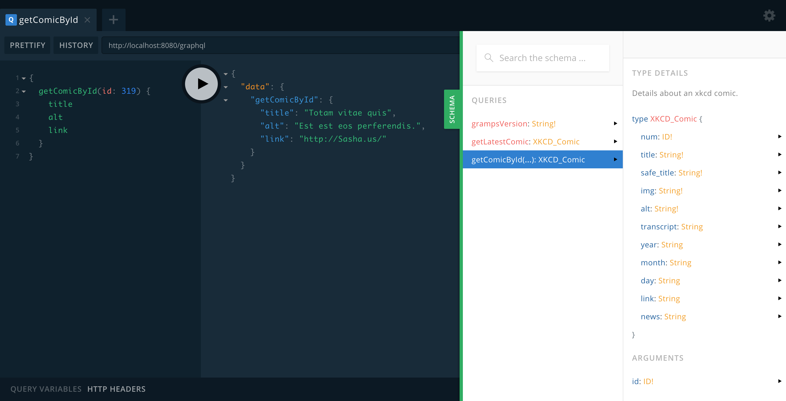Get realistic, variable mock data.
Adding data to the UI is a breeze 👌
Loading states are basically free
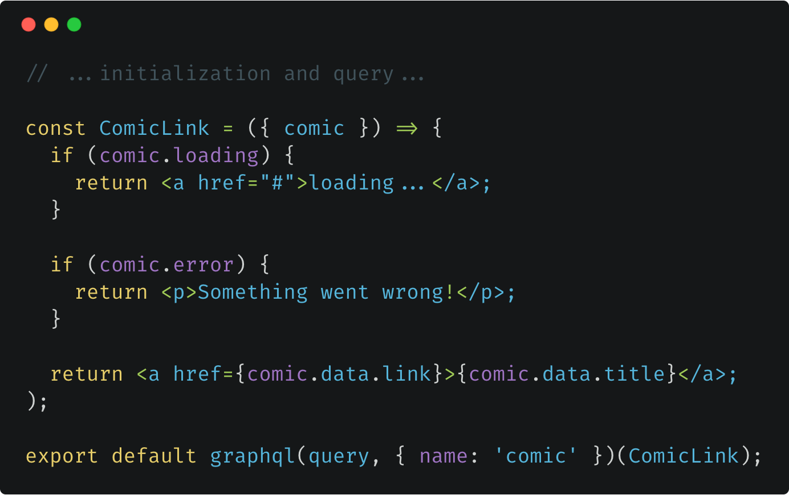Skeleton components 💀 are even better
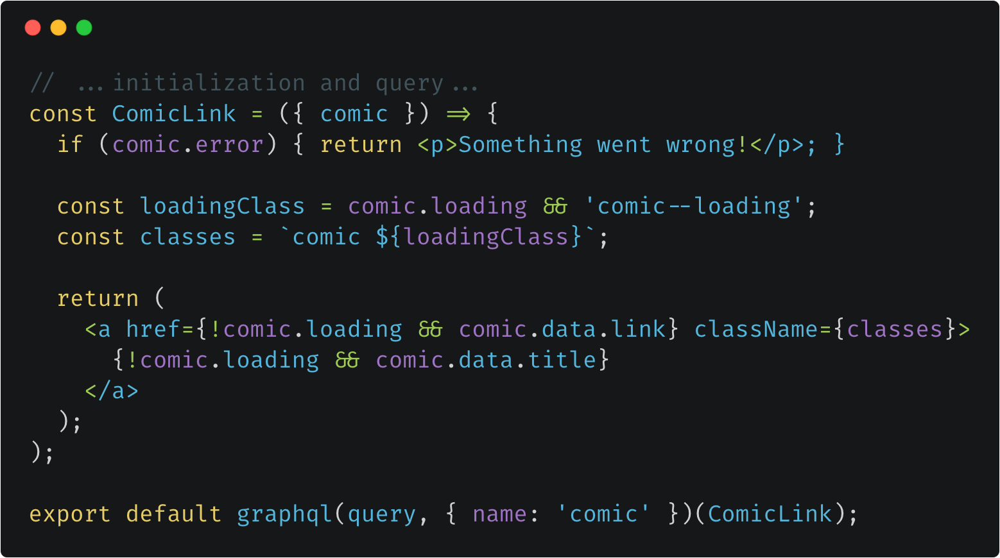Skeleton components let us render an explorable UI before data is loaded
See the Pen Skeleton Loading Pattern Example for Links by Jason Lengstorf (@jlengstorf) on CodePen.
We can also show data as it arrives
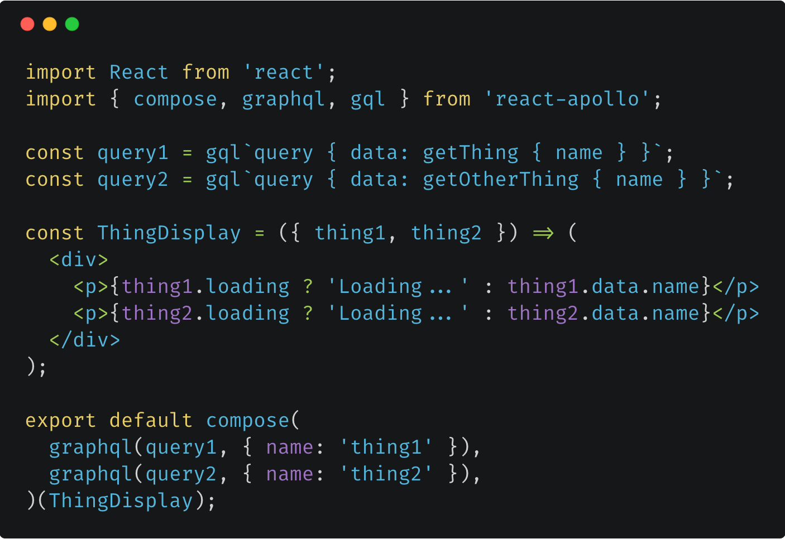Proof of Concept:
IBM Cloud Account Usage Dashboard
We wanted to start using it in production immediately

Not everyone was on board
Before we get into the details,
let me set the scene…
How IBM Cloud is built:
- Node µ-service architecture
- 30+ µ-service teams
- Each µ-service (“plugin”) is a separate codebase
- Teams control their own workflow
This has its downsides:
- Things can change in 30+ directions at any given time
- Front-ends need data from multiple µ-services
- Internal documentation & architecture is inconsistent
- Code can be wildly inconsistent between µ-services
GraphQL has solutions:
- Changes are centralized in the GraphQL µ-service
- Data access happens through a single endpoint
- Documentation is centralized and consistent
- Cleaner separation between data and presentation
But there are complications:
- Who “owns” the GraphQL µ-service?
- How can teams make independent changes?
- Can one bad commit take down the whole service?
- Doesn’t an extra layer make it harder to trace errors?
We wanted the benefits of GraphQL… but could we afford the trade-offs?
We needed answers
Can we...
- Centralize data, but let teams keep control?
- Design an approach that improves error handling?
- Make it so easy teams want to switch?
- Build a service that can handle IBM’s scale?
Challenge #1:
Centralize Data, but Decentralize Control
The ideal solution:
Each team maintains their own GraphQL schema...
but that schema is aggregated by a central µ-service.
If this was going to work, we needed a standardized format for sharing schemas.
We call these
Data Sources
Each data source is an independent GitHub repo, which means:
- ✅ No bottlenecks
Each team commits and deploys code independently. - ✅ No loss of control
Each team owns their data source. - ✅ No accidental borking
Each team’s code has individual test suites.
How do we combine the data sources?
Implementation is easy enough to fit the code on a slide
Let’s Upgrade this GraphQL Server
import Express from 'express';
import bodyParser from 'body-parser';
import { graphqlExpress } from 'apollo-server-express';
import mySchema from './schema';
import myDataAccess from './data';
const app = new Express();
app.use(bodyParser.json());
app.use('/graphql',
graphqlExpress({
schema: mySchema,
context: myDataAccess,
}),
);
Step 1: Import the Middleware
import Express from 'express';
import bodyParser from 'body-parser';
import { graphqlExpress } from 'apollo-server-express';
+ import { grampsExpress } from '@gramps/gramps-express';
import mySchema from './schema';
import myDataAccess from './data';
const app = new Express();
app.use(bodyParser.json());
app.use('/graphql',
graphqlExpress({
schema: mySchema,
context: myDataAccess,
}),
);
Step 2: Import the Data Sources
import Express from 'express';
import bodyParser from 'body-parser';
import { graphqlExpress } from 'apollo-server-express';
import { grampsExpress } from '@gramps/gramps-express';
- import mySchema from './schema';
- import myDataAccess from './data';
+ import schemaOne from '@gramps/data-source-one';
+ import schemaTwo from '@gramps/data-source-two';
const app = new Express();
app.use(bodyParser.json());
app.use('/graphql',
graphqlExpress({
schema: mySchema,
context: myDataAccess,
}),
);
Step 3: Combine the Data Sources
import Express from 'express';
import bodyParser from 'body-parser';
import { graphqlExpress } from 'apollo-server-express';
import { grampsExpress } from '@gramps/gramps-express';
import schemaOne from '@gramps/data-source-one';
import schemaTwo from '@gramps/data-source-two';
const app = new Express();
app.use(bodyParser.json());
+ app.use(grampsExpress({ dataSources: [ schemaOne, schemaTwo ] }));
app.use('/graphql',
graphqlExpress({
schema: mySchema,
context: myDataAccess,
}),
);
Step 4: Use the New Schema and Context
import Express from 'express';
import bodyParser from 'body-parser';
import { graphqlExpress } from 'apollo-server-express';
import { grampsExpress } from '@gramps/gramps-express';
import schemaOne from '@gramps/data-source-one';
import schemaTwo from '@gramps/data-source-two';
const app = new Express();
app.use(bodyParser.json());
app.use(grampsExpress({ dataSources: [ schemaOne, schemaTwo ] }));
app.use('/graphql',
+ graphqlExpress(req => ({
+ schema: req.gramps.schema,
+ context: req.gramps.context,
+ })),
);
Challenge #2:
Improve Error Handling
What Makes an Error Helpful?
- Clear description of what went wrong
- Clarity about where the error occurred
- GraphQL errors vs. underlying data access issues
- Information to help with tracing bugs
- Unique IDs shared on the client and server side
Client-Side Errors in Development
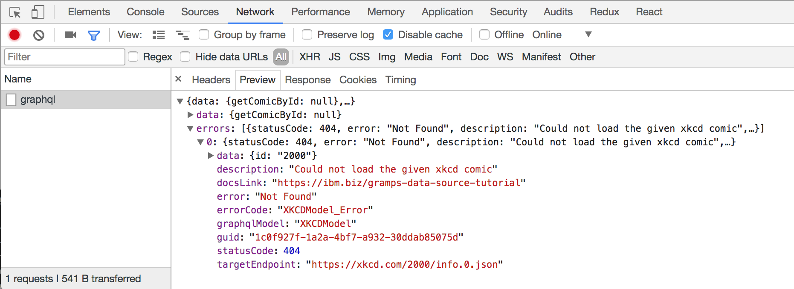In production, we can’t show some data
- Docs link may be behind our firewall
- Target endpoint may not be public
Client-Side Errors in Production
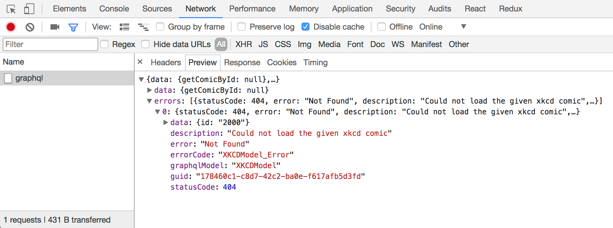docsLink and targetEndpoint are removed in production.
Client and server errors share a GUID
Error: Could not load the given xkcd comic (178460c1-c8d7-42c2-ba0e-f617afb5d3fd)
Description: Could not load the given xkcd comic
Error Code: XKCDModel_Error
GraphQL Model: XKCDModel
Target Endpoint: https://xkcd.com/2000/info.0.json
Documentation: https://ibm.biz/gramps-data-source-tutorial
Data: {
"id": "2000"
}
Using the GUID, we can find the docsLink and
targetEndpoint in the server logs.
This Means...
- Errors are normalized across all data sources
- Support tickets can directly reference details in logs
- Errors are clear and come with documentation
- The source of a given error is immediately clear
Implementation Is Optional and Easy
import Express from 'express';
import bodyParser from 'body-parser';
import { graphqlExpress } from 'apollo-server-express';
import { grampsExpress } from '@gramps/gramps-express';
import schemaOne from '@gramps/data-source-one';
import schemaTwo from '@gramps/data-source-two';
const app = new Express();
app.use(bodyParser.json());
app.use(grampsExpress({ dataSources: [ schemaOne, schemaTwo ] }));
app.use('/graphql',
graphqlExpress(req => ({
schema: req.gramps.schema,
context: req.gramps.context,
+ formatError: req.gramps.formatError,
})),
);
Challenge #3:
Make Development So Easy Teams Want to Use It
If we wanted teams to start using GraphQL, we needed it to be dead simple to get started
We created a data source starter kit:
- Strong starting point for new data sources
- Step-by-step tutorial for building a new data source
- Test coverage starts at 💯
- Pre-configured for Travis CI and Code Climate
We built a CLI to make development easier
$ gramps --live
============================================================
GrAMPS is running in live mode on port 8080
GraphiQL: http://localhost:8080/graphiql
============================================================
But there was a snag:
“How do we run a local instance of the GraphQL
µ-service if the data
source we’re developing is already installed? Won’t they collide?”
The solution?
Allow local
data sources
to override
gramps --data-source-dir ./
But add a warning
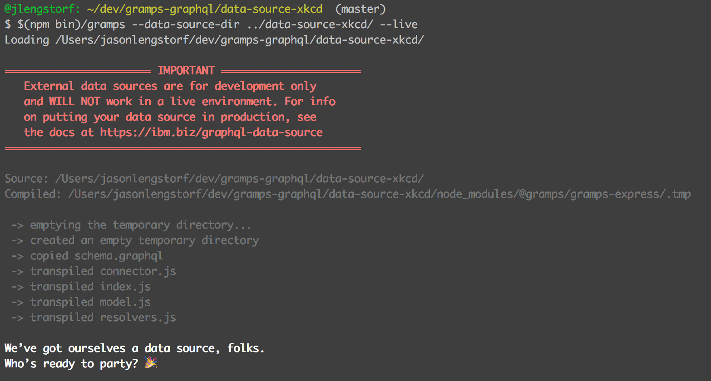Clarified text and updated links are coming (#36)
Actually, add two warnings
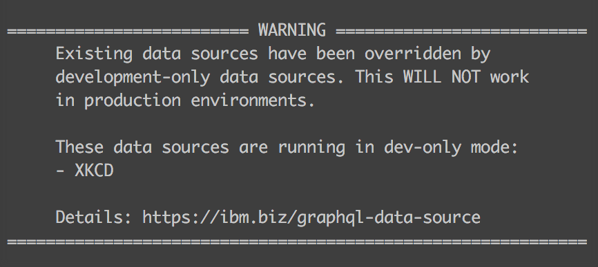Clarified text and updated links are coming (#36)
Challenge #4:
Build for
Global Scale
We didn’t have to do much
It turns out Apollo’s Express server just works.

Which is pretty great
We started working on the GraphQL µ-service in May
It hit production in July
After the dust settled,
we realized two things
#1
“If everyone wrote their data sources using this format, the dev community could share GraphQL data sources as easily as we share npm packages.”
#2
“This might be useful to other people.”
So we
released it under the MIT license
🎉
GrAMPS
GraphQL Apollo Microservice Pattern Server github.com/gramps-graphql/gramps-express · npmjs.com/org/gramps